Navigate to the download section of the Play Framework website:
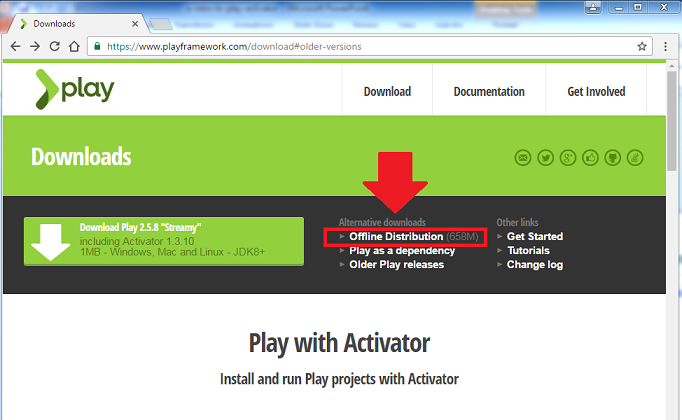
Click on the Offline Disribution link to download the latest version of Play with the Activator.
Activator is distributed as a single archive file that expands out to its own subdirectory. Extract the typesfe-activator zip file to a folder where your development software resides e.g. a dev folder on your C drive. The activator application will be approx 750MB on disk and will have a similiar folder structure to this:
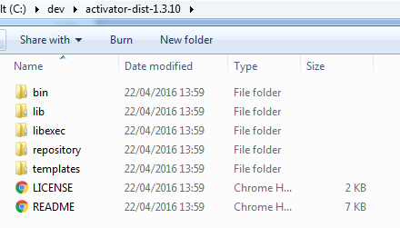
Add the Activator bin folder to your system path:
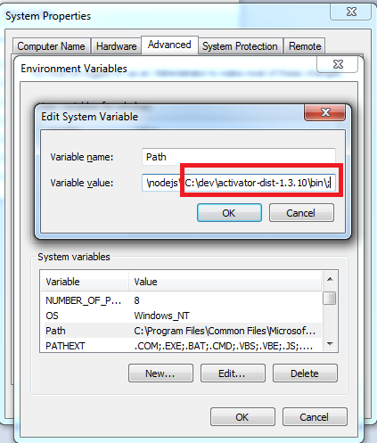
Play with Activator should now be successfully installed.
Open a command prompt and, in a convenient location, create a workspace folder for play.
Change into this folder and type activator ui:
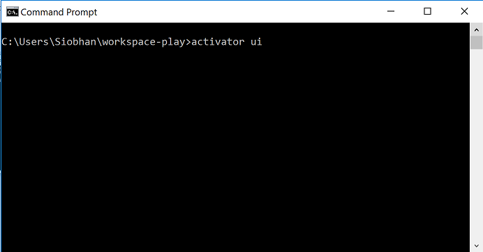
As this is our first time starting the Activator UI, a series of file downloads will initiate:
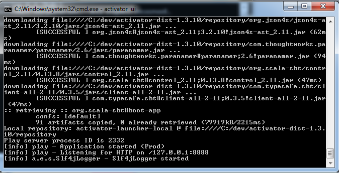
The play application should start and should be listening on port 8888 of your localhost.
The Activator UI should open in your browser:
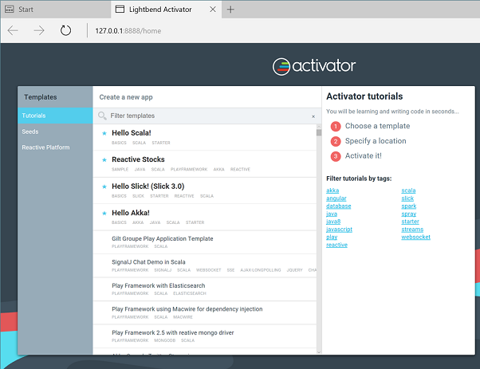
Note: you can also start the Activator UI by running the activator.bat file stored in the bin folder for your activator distribution.
If you are not seeing the activator home page, check your firewall settings to see if there are conflicts in there.
In your Activator UI, with the Tutorials option selected, enter CRUD into the search box:
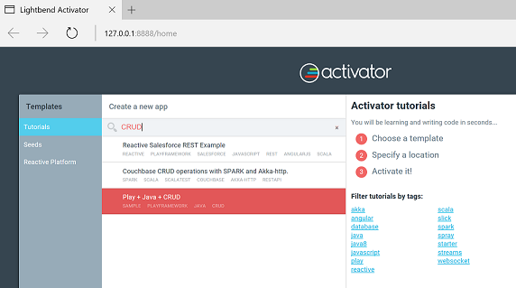
Click on the Play + Java + CRUD result. Once you are happy with the name of your new app and its location (you should be pointing at your new workpace folder), click the Create app button. We took the default project name of play2-crud-activator.
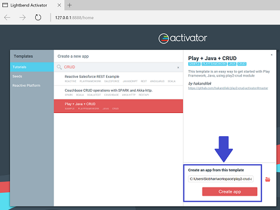
The template cloning process will start:
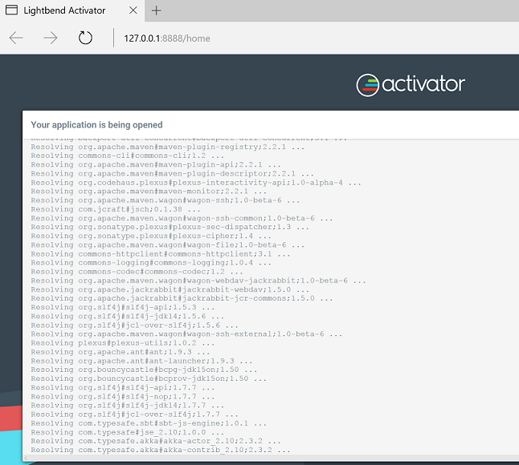
Followed by the sbt build lifecycle:
Once the sbt build lifecycle completes, the application is ready to explore:
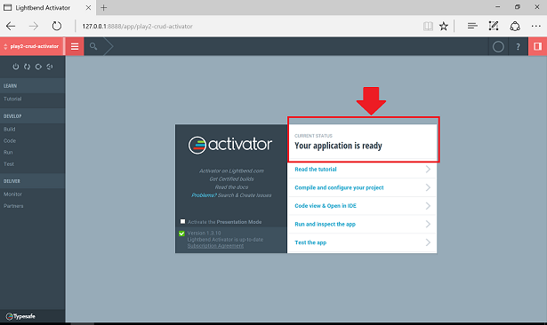
Read through each of the steps in the tutorial. This will give you an overview of the architecture underlying the Play Framekwork:
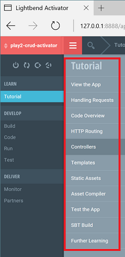
Play has a number of steps in its Develop lifecycle: build, code, run, test.
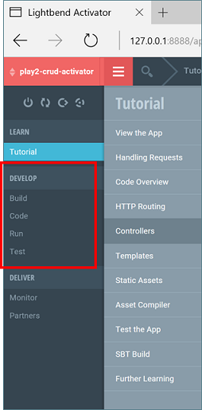
Click on the Build tab and then click the Compile button. As the code is compiling, you should see compiler activity in the Tasks and Full Output frames.
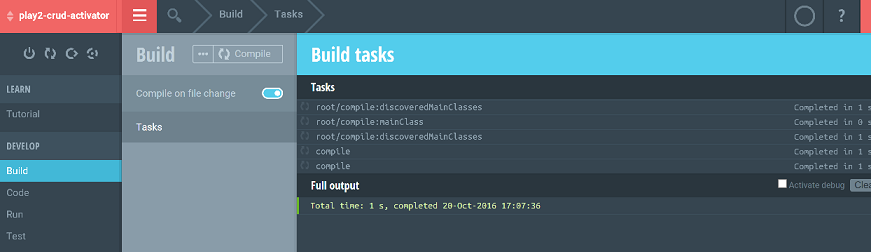
In the Test tab, you can run any tests that are in the test folder and the result of the tests is displayed. We will look at this in more detail later.
Click on the Code tab. You should now see your project directory structure. Navigate to the controllers/Application.java file.
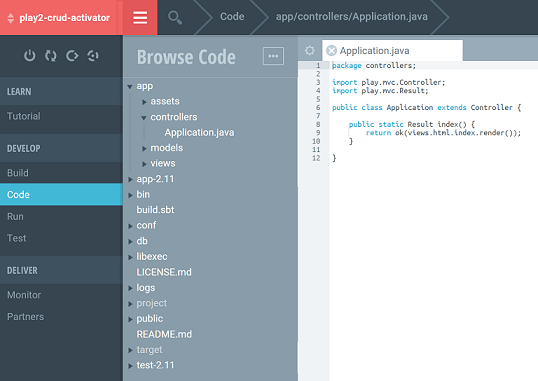
Applications.java has an index() method.
Navigate to your conf/routes file. This file maps the route from your browser URL to your java methods. It states that Application.index() should be called when you navigate to http://localhost:9000/.
Click on the Run tab and then click on the displayed Run button.
Your web app should now be listening on http://localhost:9000/. Navigate to this link and you should see this page:
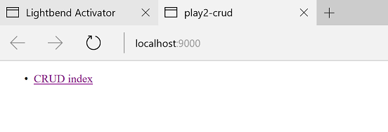
Click on the CRUD Index link and try adding some items. Don't worry yet about understanding how the architecture of the app is working...we will cover this in subsequent labs and lectures. We just want you to be familiar with the folder structure, the build process and running apps at this stage.
Return to your Activator UI, click on the Run tab, followed by the Stop button.
Now that you have shut down your app, you need to shut down Activator as it is still listening on port 8888.
Return to the console where you entered your Activator UI command and press CTRL + C. When prompted, press Y to terminate the batch job.
If you would prefer not to use the Activator UI for developing your app, you can choose to edit in Eclipse and use the Activator console commands instead.
Ensure that you have the Activator UI closed before starting this step.
Start a new command prompt/shell and navigate to the workspace folder you created in an earlier step.
Enter the command:
activator new pacemakerplayWhen prompted, choose option 5 (play-java) and hit enter:
C:\Users\Siobhan\workspace-play>activator new pacemakerplay
ACTIVATOR_HOME=C:\dev\activator-dist-1.3.10
The system cannot find the file BIN_DIRECTORY\..\conf\sbtconfig.txt.
Fetching the latest list of templates...
Browse the list of templates: http://lightbend.com/activator/templates
Choose from these featured templates or enter a template name:
1) minimal-akka-java-seed
2) minimal-akka-scala-seed
3) minimal-java
4) minimal-scala
5) play-java
6) play-scala
(hit tab to see a list of all templates)
>Change directory into the pacemakerplay folder and display the contents of the folder.
Within the pacemakerplay folder, enter this command to generate the project files for eclipse.
activator eclipseThis may not work for you first go:
C:\Users\Siobhan\workspace-play\pacemakerplay>activator eclipse
ACTIVATOR_HOME=C:\dev\activator-dist-1.3.10
The system cannot find the file BIN_DIRECTORY\..\conf\sbtconfig.txt.
[info] Loading project definition from C:\Users\Siobhan\workspace-play\pacemakerplay\project
[info] Set current project to pacemakerplay (in build file:/C:/Users/Siobhan/workspace-play/pacemakerplay/)
[error] Not a valid command: eclipse (similar: help, alias)
[error] Not a valid project ID: eclipse
[error] Expected ':' (if selecting a configuration)
[error] Not a valid key: eclipse (similar: deliver, licenses, clean)
[error] eclipse
[error] ^If the above error is generated, edit your plugins.sbt in the project directory to include the following and run the activator eclipse command again:
addSbtPlugin("com.typesafe.sbteclipse" % "sbteclipse-plugin" % "4.0.0")Numerous jars should have been successfully downloaded and the project files for eclipse should have been created.
Open eclipse and import pacemakerplay as an existing project. Your directory structure should look similar to this:
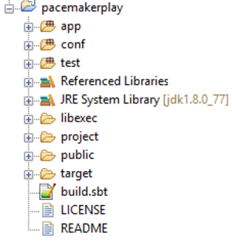
Within the pacemakerplay folder, enter the command:
activator ~runWhen the command has finished executing, it should inform you of the following:
[success] Compiled in 54s
[info] application - ApplicationTimer demo: Starting application at 2016-10-20T18:36:44.594Z
[info] play.api.Play - Application started (Dev)Navigate to this link http://localhost:9000/. If your app started correctly, the following page should be displayed:
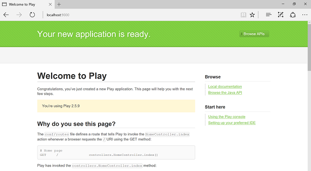
Read the info on the above page. Between the information on this page and the project files in Eclipse, can you figure out how this page was dispayed?
Return to Eclipse and edit the controllers/HomeController.java file to display a different welcome message e.g. "Welcome to Pacemaker Web 1.0":
public class HomeController extends Controller {
/**
* An action that renders an HTML page with a welcome message.
* The configuration in the <code>routes</code> file means that
* this method will be called when the application receives a
* <code>GET</code> request with a path of <code>/</code>.
*/
public Result index() {
return ok(index.render("Welcome to Pacemaker Web 1.0"));
}
}Save the file and return to the command prompt where you started the application from.
As you are running in continuous mode (you prefixed run with a ~), you should see that it automatically compiled your changes:
[success] Compiled in 11s
[info] application - ApplicationTimer demo: Starting application at 2016-10-21T08:37:55.395Z
[info] play.api.Play - Application started (Dev)
[info] Compiling 1 Java source to C:\Users\Siobhan\workspace-play\pacemakerplay\target\scala-2.11\classes...
[success] Compiled in 603msRefresh your http://localhost:9000 page in your browser. You should now see your new welcome message:
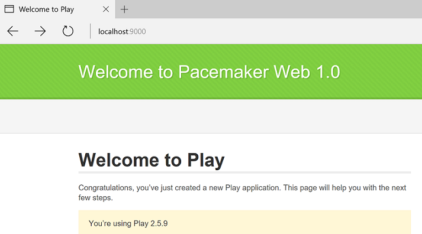
Return to Eclipse and locate the two test classes (Application and Integration) that were generated when you created the new application.
We want to demonstrate tests failing, so in ApplicationTest.java, change the welcome message to contain any random string e.g.
@Test
public void renderTemplate() {
Content html = views.html.index.render("This test is going to fail!!!");
assertEquals("text/html", html.contentType());
assertTrue(html.body().contains("This test will fail!!!"));
}Make a similar change to the welcome message in the IntegrationTest.java class.
Save these files.
Return to your command prompt and press CTRL + D to stop you application running.
Type the command:
activator testThe output should show that 2 tests failed and 1 passed:
C:\Users\Siobhan\workspace-play\pacemakerplay>activator test
ACTIVATOR_HOME=C:\dev\activator-dist-1.3.10
The system cannot find the file BIN_DIRECTORY\..\conf\sbtconfig.txt.
[info] Loading project definition from C:\Users\Siobhan\workspace-play\pacemakerplay\project
[info] Set current project to pacemakerplay (in build file:/C:/Users/Siobhan/workspace-play/pacemakerplay/)
[info] Compiling 1 Java source to C:\Users\Siobhan\workspace-play\pacemakerplay\target\scala-2.11\test-classes...
[info] application - Creating Pool for datasource 'default'
[info] application - ApplicationTimer demo: Starting application at 2016-10-21T08:47:30.756Z
[info] application - ApplicationTimer demo: Stopping application at 2016-10-21T08:47:33.340Z after 3s.
[info] application - Shutting down connection pool.
[error] Test IntegrationTest.test failed: null, took 4.6 sec
[error] Test ApplicationTest.renderTemplate failed: null, took 0.001 sec
[error] Failed: Total 3, Failed 2, Errors 0, Passed 1
[error] Failed tests:
[error] ApplicationTest
[error] IntegrationTest
[error] (test:test) sbt.TestsFailedException: Tests unsuccessful
[error] Total time: 8 s, completed 21-Oct-2016 09:47:33
C:\Users\Siobhan\workspace-play\pacemakerplay>Return to Eclipse and in both ApplicationTest.java and IntegrationTest.java, change the tests to contain your welcome message e.g.:
@Test
public void renderTemplate() {
Content html = views.html.index.render("Welcome to Pacemaker Web 1.0");
assertEquals("text/html", html.contentType());
assertTrue(html.body().contains("Welcome to Pacemaker Web 1.0"));
}Rerun the tests and verify that the failed tests are now successful.
C:\Users\Siobhan\workspace-play\pacemakerplay>activator test
ACTIVATOR_HOME=C:\dev\activator-dist-1.3.10
The system cannot find the file BIN_DIRECTORY\..\conf\sbtconfig.txt.
[info] Loading project definition from C:\Users\Siobhan\workspace-play\pacemakerplay\project
[info] Set current project to pacemakerplay (in build file:/C:/Users/Siobhan/workspace-play/pacemakerplay/)
[info] Compiling 2 Java sources to C:\Users\Siobhan\workspace-play\pacemakerplay\target\scala-2.11\test-classes...
[info] application - Creating Pool for datasource 'default'
[info] application - ApplicationTimer demo: Starting application at 2016-10-21T08:49:45.881Z
[info] application - ApplicationTimer demo: Stopping application at 2016-10-21T08:49:48.749Z after 3s.
[info] application - Shutting down connection pool.
[info] Passed: Total 3, Failed 0, Errors 0, Passed 3
[success] Total time: 8 s, completed 21-Oct-2016 09:49:48
C:\Users\Siobhan\workspace-play\pacemakerplay>Heroku, through git and a series of console commands, seamlessly supports the deployment of Play apps.
If you don't have a Heroku account, create a free one:
Follow the instructions to install Heroku CLI (command shell which contains git):
If you have a command prompt open, close it and open a new command prompt.
Enter the command to verify that Heroku installed successfully:
heroku --versionNote: this command will do an initial install of the CLI:
C:\Users\Siobhan>heroku --version
heroku-cli: Installing CLI... 17.56MB/17.56MB
heroku/toolbelt/3.43.12 (i386-mingw32) ruby/2.1.7
heroku-cli/5.4.7-8dc2c80 (windows-386) go1.7.1
You have no installed plugins.
C:\Users\Siobhan>In your command prompt, navigate to your pacemakerplay directory and enter the command:
heroku loginWhen prompted for your login credentials, enter them:
CC:\Users\Siobhan\workspace-play\pacemakerplay>heroku login
Enter your Heroku credentials.
Email: sdrohan@wit.ie
Password (typing will be hidden):
Logged in as sdrohan@wit.ie
C:\Users\Siobhan\workspace-play\pacemakerplay>If you don’t already use SSH and if you want to use SSH Git transport on Heroku, you’ll need to create a public/private key pair to deploy code. This keypair is used for the strong cryptography and that uniquely identifies you as a developer when pushing code changes.
Follow the steps here to set up your key:
If you are having difficulty locating the git-bash shell, it should be in your program files directory, within the Git folder. Note: setting up your key won't work in your command prompt; you need a git-bash shell.
Once you have your key generated, return to your command prompt and enter:
heroku keys:addYou should see the following output:
C:\Users\Siobhan\workspace-play\pacemakerplay>heroku keys:add
Found an SSH public key at C:\Users\Siobhan\.ssh\id_rsa.pub
? Would you like to upload it to Heroku? Yes
Uploading C:\Users\Siobhan\.ssh\id_rsa.pub SSH key... done
C:\Users\Siobhan\workspace-play\pacemakerplay>Before we can push our app to Heroku, we need to convert pacemakerplay to a git repo.
Create a new git repo by entering this command:
git initAdd all created files to the git repo:
git add .Commit the added files:
git commit -m initNow that our app is a git repo, we can enter:
heroku createThis will provision a new application on Heroku:
C:\Users\Siobhan\workspace-play\pacemakerplay>heroku create
Creating app... done, calm-sierra-69816
https://calm-sierra-69816.herokuapp.com/ | https://git.heroku.com/calm-sierra-69816.git
C:\Users\Siobhan\workspace-play\pacemakerplay>To push to the cloud, enter:
git push heroku masterOn the first push, there will be a LOT of console output from this command! But at the end, it should say something like this:
remote: -----> Compressing...
remote: Done: 95.3M
remote: -----> Launching...
remote: Released v4
remote: https://calm-sierra-69816.herokuapp.com/ deployed to Heroku
remote:
remote: Verifying deploy.... done.
To https://git.heroku.com/calm-sierra-69816.git
* [new branch] master -> master
C:\Users\Siobhan\workspace-play\pacemakerplay>To open your remote app in a browser, enter the command:
heroku openYou more than likely have the following error appearing:
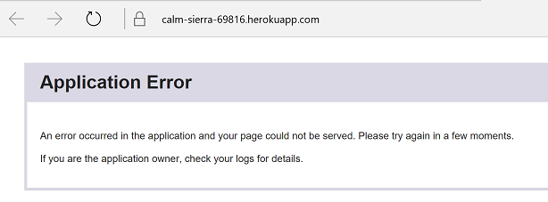
Enter this command to see if you can figure out what went wrong (hint: you are missing a Procfile and the instructions are below for adding it):
heroku logsYou need to create a Procfile in your project root directory (note upper case P for Procfile and no file extension) and add in the following line to it:
web: target/universal/stage/bin/pacemakerplay -Dhttp.port=${PORT} -Ddb.default.driver=org.postgresql.Driver -Ddb.default.url=${DATABASE_URL} -Dplay.crypto.secret="thisisthesecretpleasechangeit"Enter the following commands to push to Heroku:
git add .
git commit -m "Creating a Procfile"
git push heroku masterOnce you have pushed this file, try running your app again using heroku open.
It will still not work. We mentioned the postgres database in our procfile (we will use this database in our next lab, so we can set it up now). However, we don't have the Postgres library dependency in our build.sbt. Add the postgresql dependency to build.sbt:
name := """pacemakerplay"""
version := "1.0-SNAPSHOT"
lazy val root = (project in file(".")).enablePlugins(PlayJava)
scalaVersion := "2.11.7"
libraryDependencies ++= Seq(
javaJdbc,
cache,
javaWs,
"org.postgresql" % "postgresql" % "9.4-1201-jdbc41")Push this change to Heroku:
git add .
git commit -m "adding postgres library dependency to build.sbt"
git push heroku masterNow try running your app again:
heroku openThis time, it should run successfully, you should have the following displayed:
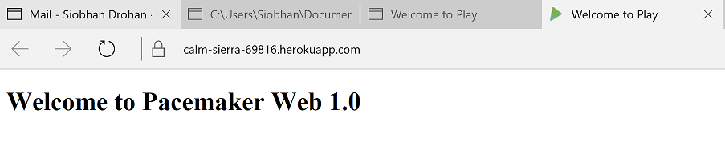
Log into Heroku online and familiarise yourself with the dashboard:
In particular, explore the various settings for your app.